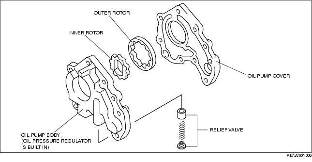

Oil pump construction [ZY]
• An efficient and compact 9-lobe epitrochoid and 10-flank inner envelope type gear has been adopted for the oil pump.
• The oil pump consists of the oil pump body, inner rotor, outer rotor, relief valve, and oil pump cover.
• An aluminum alloy oil pump cover has been adopted to reduce weight.
• The oil pressure regulator with an adjusting oil pressure is built into the oil pump body.
• The oil pump is directly driven by the crankshaft to improve engine noise reduction.
• A lightweight and compact trochoid gear type oil pump with 9.5 mm {0.37 in} wide rotors (outer rotor, inner rotor) with excellent heat-resistant and noise reduction characteristics has been adopted. Due to this oil discharge is stabilized.

Oil pump specification